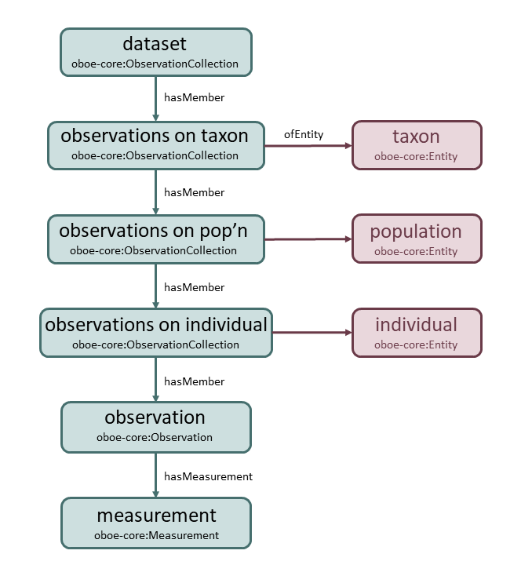

8 Overview of traits.build ontology
8.1 Using the OBOE structure
The traits.build ontology is built upon the Extensible Observation Ontology (OBOE). OBOE was developed explicitly to document the multitude of information associated with ecological observations.
OBOE has 4 core classes:
the entity, the “thing” being measured. For instance, an entity might be an individual, population or species.
an observation of the entity at a single point in time. An observation can be comprised of multiple measurements and therefore can be represented by multiple rows of data within a database.
the measurements that comprise an observation, where each measurement is of a single trait. A single measured value is associated with each measurement.
the trait being measured, which must be documented within the accompanying trait dictionary.

Within the OBOE structure, observations can be grouped into a series of nested observation collections, representing broader groupings of measurements. This flexibility within the OBOE structure, means that the database structure can uniquely indicate which traits are measured at the

8.2 Metadata for each trait value
Ecological data is only meaningful when each data value is linked to all necessary metadata.
The OBOE structure also accommodates this requirement, allowing various metadata and context types to be linked to each of the core classes.
The following metadata/context fields are linked to each measurement in traits.build:
Entity metadata
- entity type (species, population, individual)
- life stage (adult, seedling, sapling)
- basis of record (field, glasshouse, field experiment)
- sex, size, etc.
Value metadata
- value type (mean, minimum, maximum, mode, raw)
- basis of value (measurement, expert observation, literature)
- replicate count
- units

Measurement metadata
- trait collection methods
Location properties
- latitude/longitude
- vegetation description
- location properties, such as
- soil nutrients (soil N)
- climate variables (MAT, MAP, aridity index)
- fire history (fire intensity, fire severity, years since fire)
- soil nutrients (soil N)
Context properties
That is, anything else recorded about a specific row of data that explains differences between trait values across rows of data, such as
- entity contexts (e.g. plant sex, plant age, leaf type measured, tree diameter)
- treatment contexts (e.g. nutrient addition treatment, drought treatment)
- plot contexts (differences within a single “location”; e.g. slope position, fire history)
- temporal contexts (e.g. sampling season, sampling time of day)
- method contexts (e.g. canopy position, branch length sampled).

Taxonomic information
- genus, family
- full scientific name
- taxon rank
- taxon identifiers (from APC, APNI)
Dataset metadata
- collection date
- dataset description
- dataset sampling strategy
- dataset citation
- data collectors
8.3 Documenting the relationships between variables
To satisfy the OBOE structure, it is important that these many metadata fields are linked to the correct class, a measurement, specific observation or observation collection, entity, value, etc.
The many identifiers present within the traits.build data tables are required to accomplish this.
For instance:
a
populationis defined as a group of individuals of the same species, subjected to the same treatment and plot contexts and occurring in the same location. Populations are defined by having a commonpopulation_id.a
temporal_contextindicates measurements on an entity have been stratified across time, such as occurs when the same individual is measured during two different growing seasons. The columntemporal_context_idin the traits table offers an identifier that links to details about the temporal context in the context table.